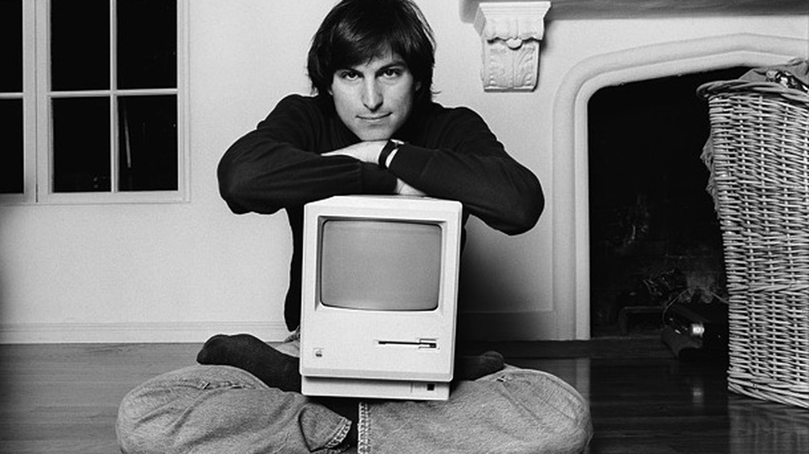

The man who loved innovation

Steve Jobs in his 20's with early version of Macintosh
Some important events in life of Steve Jobs:
- 1955 - Steven Jobs was born February 24, 1955, in San Francisco, California, and was adopted by Paul and Clara Jobs. He grew up with one sister, Patty. Paul Jobs was a machinist and fixed cars as a hobby.
- 1996 - In a February 1996 Time magazine article, Jobs said, "The thing that drives me and my colleagues … is that you see something very compelling to you, and you don't quite know how to get it, but you know, sometimes intuitively, it's within your grasp. And it's worth putting in years of your life to make it come into existence." Jobs has worked hard to translate his ideas into exciting and innovative products for businesses and consumers. He was instrumental in launching the age of the personal computer. Steve Jobs is truly a computer industry visionary.
In December of 1996 Apple purchased NeXT Software for over $400 million. Jobs returned to Apple as a part-time consultant to the chief executive officer (CEO). The following year, in a surprising event, Apple entered into a partnership with its competitor Microsoft. The two companies, according to the New York Times, "agreed to cooperate on several sales and technology fronts." Over the next six years Apple introduced several new products and marketing strategies. - 1997 - In November 1997 Jobs announced Apple would sell computers directly to users over the Internet and by telephone. The Apple Store became a runaway success. Within a week it was the third-largest e-commerce site on the Internet. In September of 1997 Jobs was named interim CEO of Apple.
In 1998 Jobs announced the release of the iMac, which featured powerful computing at an affordable price. The iBook was unveiled in July 1999. This is a clam-shaped laptop that is available in bright colors. It includes Apple's AirPort, a computer version of the cordless phone that would allow the user to surf the Internet wirelessly. In January 2000 Jobs unveiled Apple's new Internet strategy. It included a group of Macintosh-only Internet-based applications. Jobs also announced that he was becoming the permanent CEO of Apple. - 2005 - Steve Jobs with his Apple team began work on the first iPhone in 2005 and the first iPhone was released on June 29, 2007. The iPhone created such a sensation that a survey indicated six out of ten Americans were aware of its release. Time declared it "Invention of the Year" for 2007.
- 2011 - Jobs died at his Palo Alto, California home around 3 p.m. (PDT) on October 5, 2011, due to complications from a relapse of his previously treated islet-cell pancreatic neuroendocrine tumor,which resulted in respiratory arrest. He had lost consciousness the day before and died with his wife, children, and sisters at his side. His sister, Mona Simpson, described his death thus: "Steve's final words, hours earlier, were monosyllables, repeated three times. Before embarking, he'd looked at his sister Patty, then for a long time at his children, then at his life's partner, Laurene, and then over their shoulders past them. Steve's final words were: 'Oh wow. Oh wow. Oh wow.'" He then lost consciousness and died several hours later. A small private funeral was held on October 7, 2011, the details of which, out of respect for Jobs's family, were not made public.